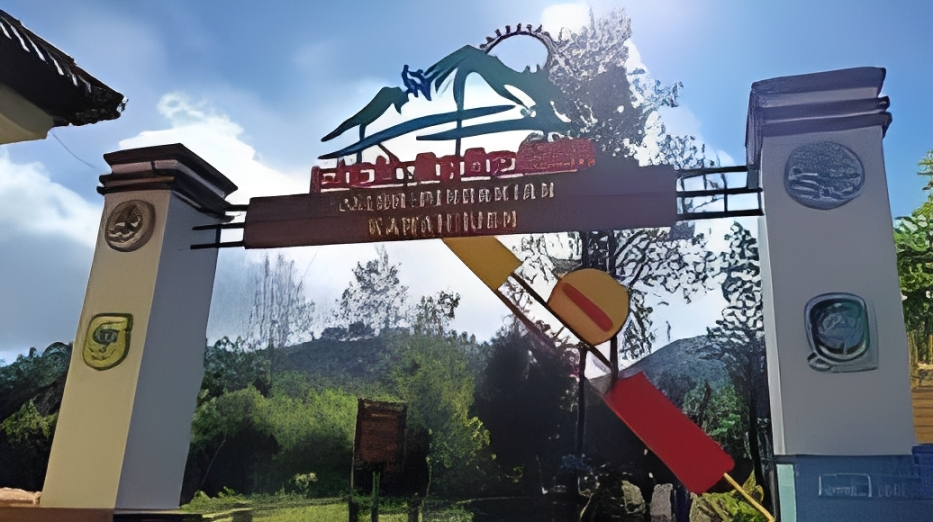
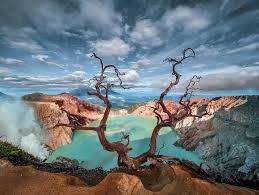
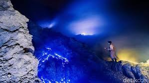
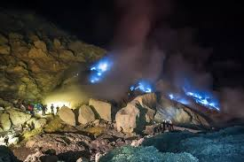
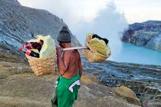
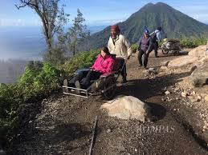

Gunung Ijen
destinasi wisata yang terkenal dengan fenomena alam langka api biru (blue fire) dan danau kawah asam terbesar di dunia
Galeri Foto






Informasi Detail
Keunikan Gunung Ijen
- Fenomena Api Biru (Blue Fire) yang Langka: Kawah Ijen adalah salah satu dari hanya dua tempat di dunia (bersama dengan Islandia) di mana fenomena api biru dapat diamati secara konsisten.
- Danau Kawah Asam Terbesar di Dunia: Danau di Kawah Ijen adalah danau kawah asam terbesar di dunia. Airnya berwarna hijau toska yang menakjubkan, tetapi memiliki tingkat keasaman yang sangat tinggi, dengan pH antara 0,2 hingga 0,5, menjadikannya sangat berbahaya.
- Aktivitas Penambangan Belerang Tradisional: Pengunjung dapat menyaksikan dari dekat kehidupan para penambang lokal yang bekerja dalam kondisi ekstrem.
- Pemandangan Kaldera dan Matahari Terbit: Selain fenomena api biru, Kawah Ijen menawarkan pemandangan matahari terbit yang memukau dengan latar belakang kaldera yang luas dan danau berwarna toska, menjadikannya salah satu tempat alami terindah di Asia Tenggara.
Aktivitas yang Bisa Dilakukan
- Melihat Fenomena Blue Fire yang Langka
- Menikmati Matahari Terbit (Sunrise View)
- Mengamati Danau Kawah Asam Terbesar di Dunia
- Menyaksikan Aktivitas Penambang Belerang
- Mengabadikan Keindahan Pemandangan Kawah Ijen
Info Praktis
- Lokasi: Perbatasan Kabupaten Banyuwangi dan Kabupaten Bondowoso
- Biaya Masuk: Rp. 20.000 untuk wisatawan domestik dan Rp. 100.000 untuk wisatawan asing
- Waktu Terbaik Berkunjung: Pada musim kemarau antara bulan April hingga Oktober.
- Transportasi: Pengunjung dapat menggunakan kendaraan pribari yang bisa sampai ke Paltuding
- Akomodasi: Terdapat beberapa penginapan, homestay, atau hotel melati di sekitar Sempol yang lebih dekat dengan pintu masuk Paltuding, cocok jika Anda ingin mengurangi waktu tempuh dini hari.
Peraturan Kunjungan
- Dilarang Turun ke Kawah
- Dilarang Membuang Sampah Sembarangan
- Dilarang Keluar Jalur Pendakian
- Dilarang Merusak Alam
- Tidak Disarankan Membawa Anak-anak